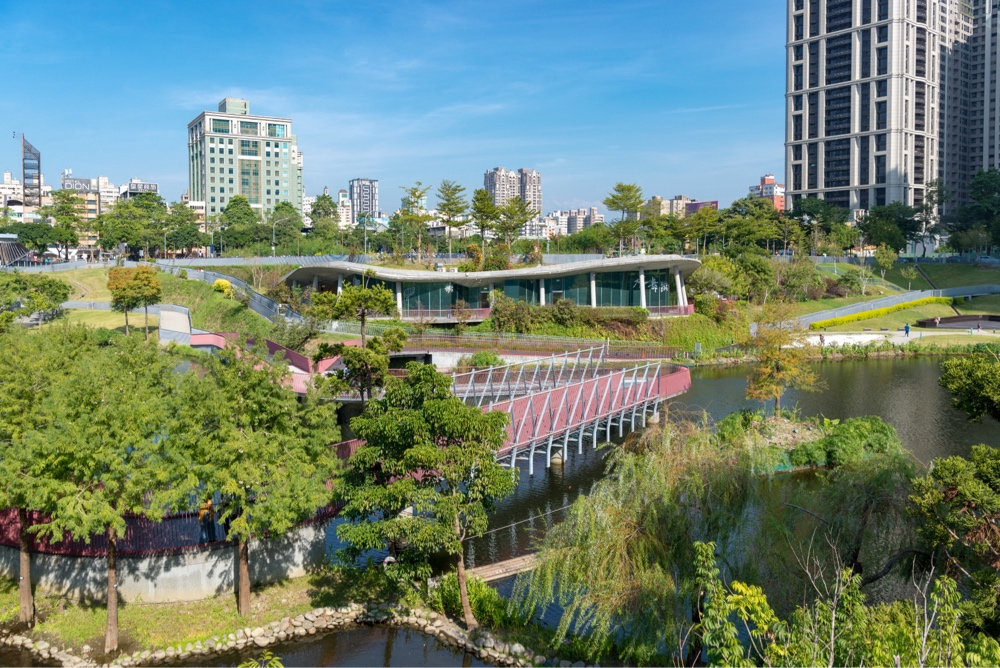
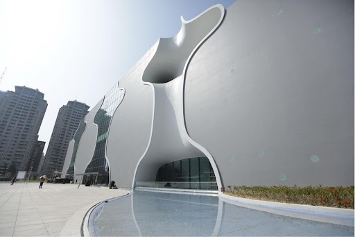

熱門景點推薦

秋紅谷景觀生態公園
所在位置：407 臺中市西屯區朝富路30號
詳細介紹
是亞洲首創、全台唯一的下凹式綠地公園，坐落於台中市繁華的七期重劃區內。

台中國家歌劇院
所在位置：407025臺中市西屯區惠來路二段101號
詳細介紹
位於臺中市西屯區七期重劃區，是一大型公有展演空間，由曾獲普立茲克獎的日本建築師伊東豊雄設計。
審計新村
所在位置：台中市西區民生路368巷2弄12號
詳細介紹
是將半世紀歷史的省政府審計處員工宿舍，成功轉型為充滿活力的青年創業與文創基地。
高美濕地（高美野生動物保護區）
所在位置：台中市清水區大甲溪出海口
詳細介紹
位於臺中市清水區大甲溪出海口南側，是擁有豐富生態與絕美夕陽的知名天然景點。